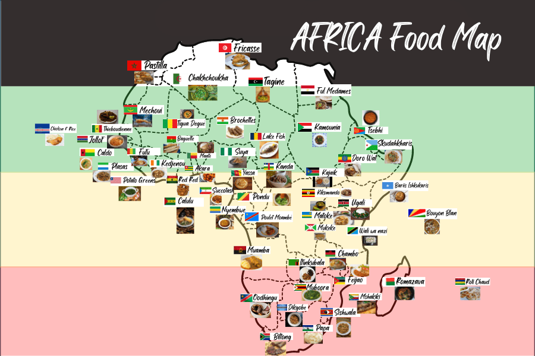
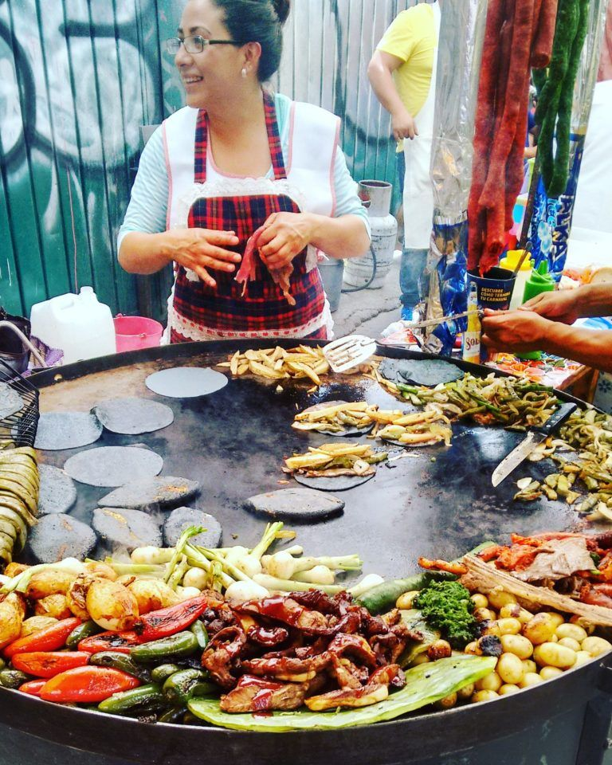

Vörös Dominik
Célom : olyan munka helyet találni amit szeretek és jól fizet
Mit tanultam eddig?
- Rendészeti suliba jártam szovall amit eddig biztos hogy tanultam rengeteg unalmas törvényt
- Voltam katona szóval meg tanultam szépen tisztelegni
- Mióta egyedül élek megtanultam minimálisan alapszinten fözni ha lehet igy hivni amit csinálok
- A suli munka felállásnak hála meg tanultam jobban beosztani az időmet
- Magában a suliban tanultam szerintem rengeteg érdekes dolgot
Általános szabad idős tevékenységeim közé tartozik a számító gépezés , kajáldák kiprobálása ha idöm engedi.


